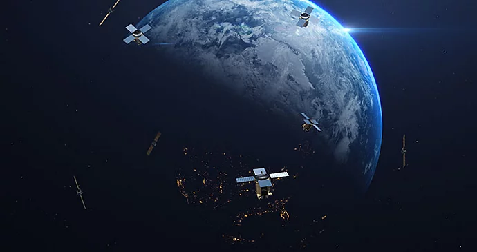

¿Cómo funciona la animación con CGI?
En las animaciones, la CGI se puede usar para crear mundos completamente nuevos, como los que aparecen en Toy Story de Pixar o en Frozen de Disney. En estos casos, la CGI elimina la necesidad de realizar animaciones manuales que serían sumamente complejas, costosas y laboriosas, y dota a los artistas de mayor libertad sin tener que limitarse a los confines de la animación en 2D. La animación con CGI es un elemento más dentro del amplio universo de las técnicas de animación, tales como: - Animación en 2D basada en vectores - Stop motion - Gráficos animados - Animación en celuloide Fuera de la televisión y del entorno cinematográfico, las técnicas de animación con CGI se utilizan en muy diversos sectores, como la medicina, la ciencia, la ingeniería, la inmobiliaria, la arquitectura, la astrología, el arte o la publicidad.

Ejemplos de animación con CGI.
Tin Toy (1988).
Este cortometraje de John Lasseter sentó gran parte de las bases visuales y temáticas de Toy Story. Lo protagoniza Tinny, hombre orquesta de juguete, mientras se esfuerza por escapar del bebé que lo atormenta, Billy. La animación de la película no es tan fluida o realista que otras películas posteriores, pues el software PhotoRealistic RenderMan patentado de Pixar todavía no cumplía todos los objetivos de los animadores. Sin embargo, fue suficiente para captar la atención de Disney, que más tarde aceptó financiar Toy Story.
Toy Story (1995).
Con Toy Story, Pixar llegó por fin al público general y se consolidó como estudio que dominaría las animaciones con CGI durante varias décadas. Toy Story sumamente innovadora, además de entretenida, fue todo un éxito de público. Además, sus personajes protagonistas, Woody y Buzz Lightyear, se convirtieron en iconos. Se considera una de las mejores películas de todos los tiempos, en lo que constituye un vuelco radical respecto al ph
Hormigaz (1998).
Esta película marca el inicio de la batalla entre los estudios de animación con CGI. En 1998, DreamWorks perturbó el estreno del segundo largometraje de Pixar, Bichos, con su propia animación con CGI protagonizada por insectos, Hormigaz. Por primera vez, la CGI ya no parecía una innovación novedosa, sino un nuevo estándar en la cinematografía de animación.
El Rey León (2019).
Al igual que en el remake de 2016 de El Libro de la Selva, El Rey León alcanzó nuevas cotas en términos de CGI con la creación de una sabana africana totalmente fotorrealista. Aunque la película generó controversia entre los enamorados del clásico de Disney de 1994 dibujado a mano, el resultado es fascinante. En cada toma de esta nueva versión, se procesaron digitalmente desde los abrevaderos hasta las llanuras, pasando por los personajes de Simba, Timón y Pumba, pero parecen absolutamente reales. La animación con CGI había avanzado muchísimo desde A Computer Generated Hand.

Cómo crear una animación con CGI.
Las animaciones con CGI profesionales suelen requerir un equipo de artistas de VFX, previsualización, iluminación, animación, rotoscopia y composición, entre otros. Sin embargo, también puedes crear animaciones con CGI en casa. Consulta estos pasos para comenzar.

1. Lee sobre CGI. Antes de empezar, lee libros, tutoriales y recursos sobre animación con CGI. Necesitarás conocimientos básicos de distintos términos y técnicas antes de ponerte manos a la obra. 2. Consigue los equipos adecuados. Para ejecutar software de CGI, es preciso dotar tu configuración de hardware doméstica de equipos potentes. Necesitas al menos 3 GB de RAM, una velocidad de procesamiento razonable y una tarjeta gráfica para comenzar a hacer magia. 3. Aprende a usar el software de CGI. Para animar con CGI, se precisa un software específico. Algunos son gratuitos, otros requieren una suscripción. El software de animación Adobe Animate está disponible en versión de prueba gratis. 4. Crea un modelo. Crear un modelo es el primer paso para que tu personaje cobre vida. Juega con polígonos y formas para crear la animación con CGI en 3D o en 2D. 5. Añade texturas. La textura es lo que aporta calidez y realismo al modelo. 6. Crea el esqueleto del modelo. Para que la animación se mueva, es preciso crear su esqueleto (o “rig”). Si usas Adobe Animate, utiliza la herramienta Deformación de activos para crear huesos y articulaciones en el diseño. A continuación, puedes realizar los movimientos clave e interpolar el esqueleto para generar las transiciones entre ellos. Obtén más información sobre la creación de esqueletos en los personajes. 7. Realiza la animación. Para dotar de acción a tu creación, prueba el esqueleto para asegurarte de que se mueve como deseas. Si no es así, vuelve al esqueleto y realiza los cambios necesarios en los movimientos clave. 8. Ilumina, procesa y añade efectos. Por último, añade los fondos, la iluminación y otros efectos especiales que desees incorporar a la animación con CGI. Recuerda que es muy posible que la animación no quede perfecta al primer intento. Sigue probando y practicando hasta que consigas que sea como tú quieres.